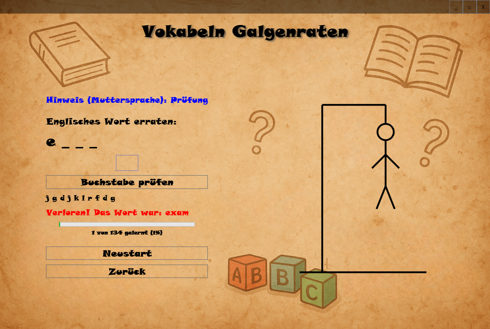
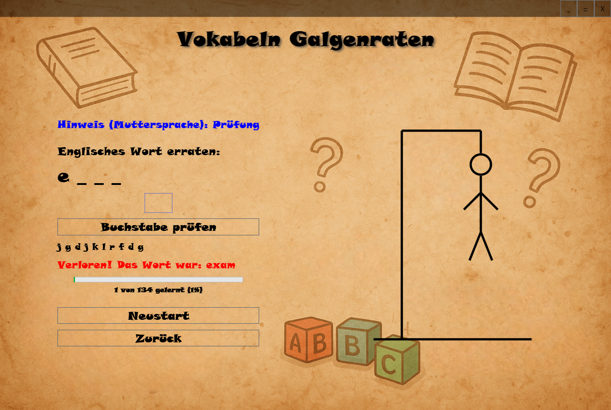

Willkommen bei VokabelQuiz
Spielerisch Sprachen lernen – mit verschiedenen Modi und Google Drive Unterstützung.
Screenshots


 


Vokabel Quiz ist ein interaktives Lernprogramm für Windows, mit dem Nutzer spielerisch Vokabeln lernen können. Die Anwendung bietet verschiedene Spielmodi wie Quiz, Kreuzworträtsel, Galgenmännchen, Memory, Lernkarten und Wortgitter.
Nutzer können eigene Vokabeln hinzufügen oder hochladen. Eine integrierte Sprachausgabe sowie mehrsprachige Benutzeroberfläche (u.a. Deutsch und Englisch) unterstützen den Lernprozess. Ideal für Schüler, Sprachlerner und Lehrer.
Das Programm eignet sich besonders gut zum Englischlernen für mehrsprachige Nutzer – aber auch für englischsprachige Nutzer, die Deutsch lernen möchten. Eine mehrsprachige Benutzeroberfläche (Deutsch und Englisch) sowie integrierte Sprachausgabe unterstützen dabei gezielt den Lernprozess.